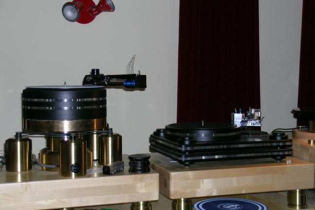
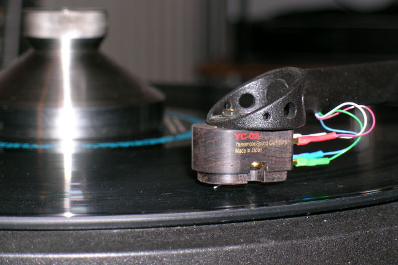
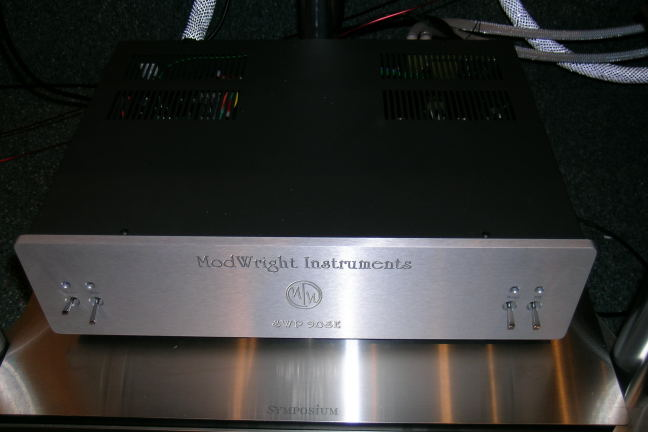
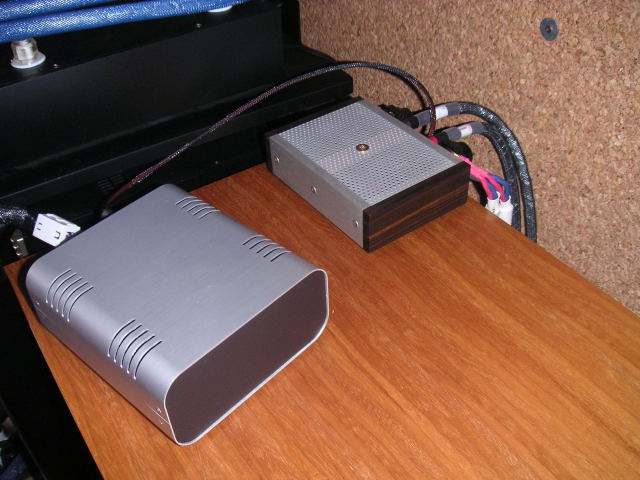
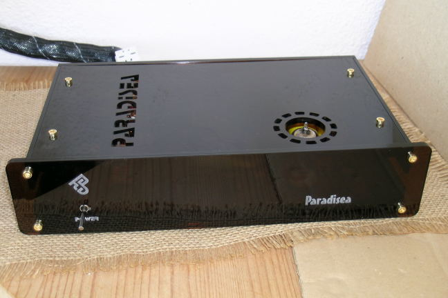
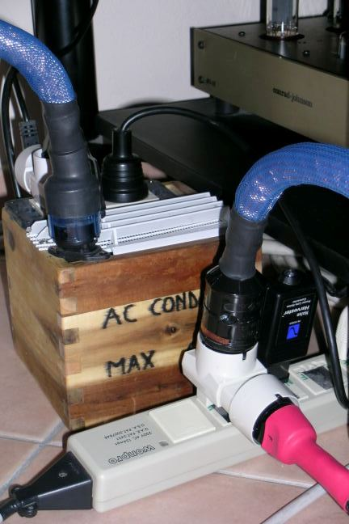

Some Audio News:
(from my email of 18/02/07)

Dear audiophile friends,with this email I would like to let you know about some new products that I have just seen. The first one is only a "work in progress": it is a new tonearm which Kuzma is developing. Since this work is in prototipe phase, I can't tell you too much (also in the attached picture you can just imagine that on the left there is a tonearm!), but only that it should be better than the Stogi Reference. Mounted on this tonearm I auditioned the new Kuzma KC-4 cartridge, which is done in Japan by ZYX. The KC-1...KC-4 cartridges will be available very soon.
The same day I have listened at NEL Audio (Ljubljana) the new ModWright SWP9.0SE phono stage which was interfaced with the Yamamoto YC-02 MC cartridge: 0.18mV, 1 Ohm, ebony body and berylium cantilever for only 700 E! I must come back to listen this system as soon as the just arrived AcousticZen Adagio speakers will be break-in, but it could become a giant killer.
|
 |
 |
Before to close, I will add a few words on some components which my friend Znort gave me. The first one is the 40W power amplifier Audio Sector Patek. It is an interesting "cheap-chip" amplifier, which resambles the warm tube sound, but which doesn't have (at least this very sample in my system) the high frequency transparence and harmonic structure of a very good tube amplifier (but which costs much more).
The second is the Paradisea DAC, which is based on the old Philips TDA 1541A DA converter at 16 linear bit (without oversampling) and uses a tube analog output stage. Made in Taiwan, it is very cheap and musical. Have you noted that some of the best CD-players use these old chips, better if in the very rare "crown" version? Look at the Zanden 5000 specs (BTW, Kuzma told me that Zanden are doing a "small" one-box player) or also at the higly promising Abbingdon Music Research CD-77 (the Zanden of "poor" people?), not to mention the old Marantz CD7.
|
 |
 |

Finally, I'm testing the PS Audio Noise Harvester: I still don't know if the sound "improves", but I have seen that it blinks very frequently in my room plugs, meaning that I have a lot of AC noise. It is the small black box that you can see on the left of the last picture, in front of my Audio Consulting 120VA transformer "AC cleaner": have I never told you how good are these tranformers? No? Too bad!
OK, I hope you enjoyed these audio news. Have a nice listening!
Tino © April 2007